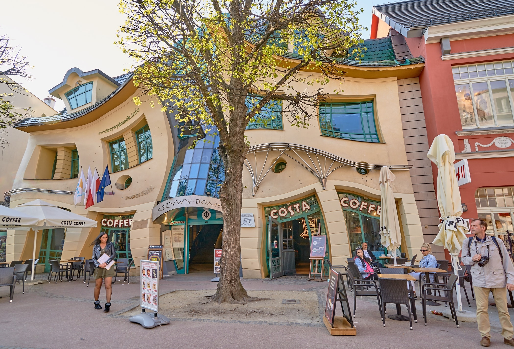

Kelionės organizatorius: UAB „TravelDeals LT“(Makalius)
1 diena
Išvyksime iš Vilniaus apie 03:30 val. („Ergo“ aikštelė, Geležinio Vilko g. 6 A), 05.00 val. – iš Kauno (PC „Mega“), 06:00 val. iš Alytaus (prie autobusų stoties), 06:30 val. iš Lazdijų („Circle K“ degalinė). Tikslią informaciją apie išvykimo vietas rasi čia: kelionių autobusu išvykimo vietos.
Vyksime į Vilko Guolį*, kuriame vyks ekskursija. Vilko guolis arba kitaip, Vilko irštva – tai įtvirtintas Hitlerio bunkeris, stūksantis gūdžioje, pelkėtoje Lenkijos miškų vietovėje (tuometiniuose Rytprūsiuose). Antrojo pasaulinio karo metais iš šios būstinės nacistinės Vokietijos lyderis kontroliavo karo veiksmus, vadovavo ginkluotosioms pajėgoms. Pasibaigus karui, atsitraukdami vokiečiai dalį pastatų susprogdino, tad tik dalis jų išliko iki šiandien. Po ekskursijos Vilko guolyje tęsime kelionę per Lenkiją link Olivos katedros*, garsėjančios savo įspūdingais vargonais. Aplankius katedrą, atvyksime į Gdanską, įsikursime viešbutyje ir keliausime apžiūrėti miesto. Gdanskas – jau XII a. garsėjęs kaip ypatingos svarbos Baltijos pajūrio uostas. Susipažinsime su jo senamiesčiu: Aukštutiniai, Auksiniai ir Žalieji vartai, Uosto krantinė ir centrinė Ilgojo turgaus gatvė, 1633 m. pastatytas Neptūno fontanas, liudijantis uostamiesčio statusą, Artūro rūmai, kuriuose rinkdavosi turtingi miesto žmonės bei vykdavo įvairių gildijų, brolijų, pirklių susirinkimai, Šv. Marijos bažnyčia, stebinanti savo dydžiu ir aukščiu (norintys galės užkilti į apžvalgos aikštelę* ir pažvelgti į miestą iš viršaus). Po ekskursijos, pažintį su miestu galima tęsti savarankiškai, kadangi įsikursime visai netoliese Gdansko centro. Nakvynė viešbutyje Smart Hotel.
2 diena
Po pusryčių keliausime į Sopotą. Tai vienas garsiausių Lenkijos kurortų! Čia pasivaikščiosime ilgiausiu tiltu į jūrą* (515 m), Monte Casino gatve, kuri labai primena pagrindinę Palangos Basanavičiaus gatvę bei pamatysime kreivą namą. Laisvas laikas Sopote, kurį bus galima praleisti pajūryje. Po smagaus pasibuvimo Sopote keliausime į Malborko pilį*. Malborko arba Marienburgo pilis, dar XIII a. pastatyta Teutonų ordino, yra didžiausia plytinė viduramžių pilis Europoje. Ši tvirtovė priklausė Kryžiuočių ordinui ir buvo jų pagrindinė būstinė. Viduje pamatysime gyvenamąsias patalpas, koplyčią, sargų postus, taip pat eksponuojamus išlikusius daiktus: ginklus, papuošalus ir kt. Po ekskursijos mūsų lauks kelionė namo. Į Kauną ir Vilnių grįšime apie vidurnaktį.

Kas įskaičiuota į kelionės kainą?
Aušra Gronskytė